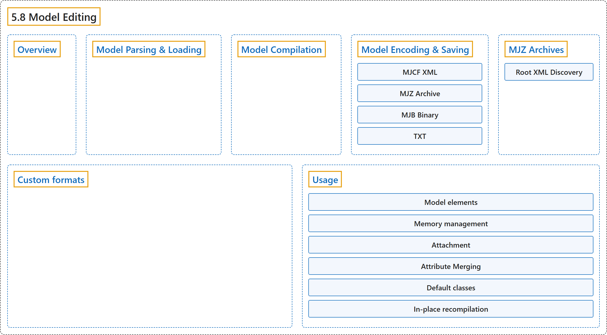

5.8 Model Editing
Classification

Glossary
| Term | Definition | 中文翻译 | Source |
|---|---|---|---|
| 5.8 Model Editing 模型编辑 |
(context) "It is possible to create and modify models using the mjSpec struct and related API." | （语境）可以用 mjSpec 结构体和相关 API 创建和修改模型。 | Google DeepMind, n.d., "Model Editing", para. 1 |
| Overview 概述 |
"The API augments the traditional workflow of creating and editing models using XML files, breaking up the parse and compile steps." | 这套 API 扩充了用 XML 文件创建和编辑模型的传统工作流程，把解析和编译两个步骤拆开。 | Google DeepMind, n.d., "Overview", para. 1 |
| Model Parsing & Loading 模型解析与加载 |
"As summarized in Model instances, model description files (MJCF, MJZ, URDF, USD) are parsed into an mjSpec using mj_parse (or mjSpec.from_file() / mjSpec.from_string() in Python)." | 如“模型实例”一节所概述，模型描述文件（MJCF、MJZ、URDF、USD）用 mj_parse 解析为 mjSpec（在 Python 中用 mjSpec.from_file() 或 mjSpec.from_string()）。 | Google DeepMind, n.d., "Model Parsing & Loading", para. 1 |
| Model Compilation 模型编译 |
"Once a high-level mjSpec is created—by parsing a file, loading an archive, or constructing it programmatically—it is compiled into an mjModel using mj_compile." | 高层的 mjSpec 一旦创建（通过解析文件、加载归档或以编程方式构建），就用 mj_compile 编译成 mjModel。 | Google DeepMind, n.d., "Model Compilation", para. 1 |
| Model Encoding & Saving 模型编码与保存 |
"Model specs and compiled models can be serialized to files using mj_encode, or directly saved to XML strings using mj_saveXMLString or mj_saveXML." | 模型 spec 和编译后的模型可以用 mj_encode 序列化到文件，或用 mj_saveXMLString 或 mj_saveXML 直接保存为 XML 字符串。 | Google DeepMind, n.d., "Model Encoding & Saving", para. 1 |
| MJCF XML MJCF XML 格式 |
"Flattens the spec into a single MJCF XML file using mj_saveXML." | 用 mj_saveXML 把spec 展平为单个 MJCF XML 文件。 | Google DeepMind, n.d., "Model Encoding & Saving", item 1 |
| MJZ Archive MJZ 归档 |
"Bundles the spec and all associated external assets (meshes, textures, included XMLs) into a self-contained Zip archive via the built-in mjz_encoder." | 通过内置的 mjz_encoder 把spec 及所有关联的外部资源（网格、纹理、被包含的 XML）打包成一个自包含的 Zip 归档。 | Google DeepMind, n.d., "Model Encoding & Saving", item 2 |
| MJB Binary MJB 二进制 |
"Serializes the compiled mjModel in MuJoCo binary format via mj_saveModel." | 通过 mj_saveModel 把编译后的 mjModel 序列化为 MuJoCo 二进制格式。 | Google DeepMind, n.d., "Model Encoding & Saving", item 3 |
| TXT TXT 文本 |
"Writes a human-readable text dump via mj_printModel." | 通过 mj_printModel 写出人类可读的文本转储。 | Google DeepMind, n.d., "Model Encoding & Saving", item 4 |
| MJZ Archives MJZ 归档 |
"The MJZ format (extension .mjz or .zip) provides a convenient way to bundle an entire model and all of its referenced assets into a single Zip archive." | MJZ 格式（扩展名 .mjz 或 .zip）提供了一种方便的方式，把整个模型及其引用的所有资源打包成单个 Zip 归档。 | Google DeepMind, n.d., "MJZ Archives", para. 1 |
| Root XML Discovery 根 XML 查找 |
(context) "When decoding an .mjz archive, MuJoCo searches for the root model XML file in the following order:" | （语境）解码 .mjz 归档时，MuJoCo 按以下顺序查找根模型 XML 文件： | Google DeepMind, n.d., "Root XML Discovery", para. 1 |
| Custom formats 自定义格式 |
(context) "Adding support for new file formats can be done with mjp_registerDecoder and mjp_registerEncoder." | （语境）可以用 mjp_registerDecoder 和 mjp_registerEncoder 添加对新文件格式的支持。 | Google DeepMind, n.d., "Custom formats", para. 1 |
| Usage 用法 |
(context) "Here we describe the C API for procedural model editing, but it is also exposed in the Python bindings." | （语境）这里介绍用于程序化模型编辑的 C API，它也在 Python 绑定中提供。 | Google DeepMind, n.d., "Usage", para. 1 |
| Model elements 模型元素 |
"Model elements corresponding to MJCF are exposed to the user as C structs with the mjs prefix." | 对应 MJCF 的模型元素以带 mjs 前缀的 C 结构体提供给用户。 | Google DeepMind, n.d., "Model elements", para. 1 |
| Memory management 内存管理 |
"The library takes ownership of all elements and frees them when the parent mjSpec is deleted using mj_deleteSpec." | 库拥有所有元素的所有权，并在用 mj_deleteSpec 删除父 mjSpec 时释放它们。 | Google DeepMind, n.d., "Memory management", para. 1 |
| Attachment 附加 |
"Attachment allows the user to move or copy a subtree from one model into another, while also copying or moving related referenced assets and referencing elements from outside the kinematic tree (e.g., actuators and sensors)." | 附加允许用户把一个子树从一个模型移动或复制到另一个模型中，同时复制或移动相关的被引用资源，以及运动学树之外引用它的元素（例如执行器和传感器）。 | Google DeepMind, n.d., "Attachment", para. 1 |
| shallow copy 浅复制 |
"The default behavior (“shallow copy”) is to move the child into the parent while attaching, so subsequent changes to the child will also change the parent." | 默认行为（“浅复制”）是在附加时把子模型移入父模型，因此之后对子模型的修改也会改变父模型。 | Google DeepMind, n.d., "Attachment", para. 1 |
| Attribute Merging 属性合并 |
"A conflict occurs when both the parent and child specify authored values for the same field and those values differ." | 当父模型和子模型对同一字段都指定了显式设置的值，且这些值不同时，就发生冲突。 | Google DeepMind, n.d., "Attribute Merging", para. 1 |
| warning (default) warning（默认） |
"Parent values take precedence. Whenever a conflict is detected, a warning is emitted but the parent value is not modified." | 父模型的值优先。每当检测到冲突时，发出一个警告，但父模型的值不被修改。 | Google DeepMind, n.d., "Attribute Merging", item 1 |
| merge merge（合并） |
"Attribute values are merged using a per-field strategy as described in the table below." | 属性值按逐字段策略合并，见下表。 | Google DeepMind, n.d., "Attribute Merging", item 2 |
| error error（报错） |
"Any conflict results in a compile error." | 任何冲突都会导致编译错误。 | Google DeepMind, n.d., "Attribute Merging", item 3 |
| Default classes 默认类 |
"As explained in the Default settings section, default classes are first loaded as a tree of dummy elements, which are then used to initialize elements which reference them." | 如“默认设置”一节所述，默认类先被加载为一棵由虚元素组成的树，再用来初始化引用它们的元素。 | Google DeepMind, n.d., "Default classes", para. 1 |
| In-place recompilation 就地重新编译 |
"In contrast, mj_recompile updates an existing mjModel and mjData pair in-place, while preserving the simulation state." | 相比之下，mj_recompile 就地更新已有的一对 mjModel 和 mjData，同时保留仿真状态。 | Google DeepMind, n.d., "In-place recompilation", para. 1 |
References
Google DeepMind. (n.d.). Model Editing. MuJoCo Documentation (Version 3.17.0). Retrieved October 31, 2026, from https://mujoco.readthedocs.io/en/stable/programming/modeledit.html